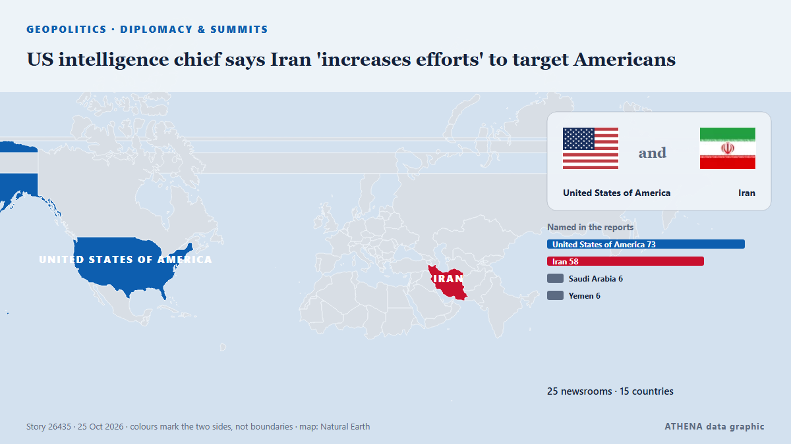

US intelligence chief says Iran 'increases efforts' to target Americans

Director of National Intelligence Jay Clayton warned in a memo to Secretary of State Rubio that Iran has "substantially increased efforts to target U.S. personnel," and the plots have "reached… von CBS News (World)
Unabhängig gemeldet von 25 Medien in 15 Ländern seit dem 24. Okt., zuerst von CBS News (World); die Berichterstattung ist auf dem Höhepunkt. ATHENA stuft das Risiko als erhöht ein (5.1/10), vor allem wegen der Schwere des beschriebenen Schadens und seiner geografischen und sektoralen Reichweite. Die Konfidenz liegt bei 90 % (hoch): 25 Medien bestätigen es unabhängig, bei einer mittleren Verlässlichkeit der Quellen von 77 %. Wer berichtete: 6 Medien in Vereinigte Staaten · United States, 2 Medien in Saudi-Arabien · Saudi Arabia, 2 Medien in Singapur · Singapore. Die Berichterstattung lief von 24. Okt. bis 25. Okt., über 27 Stunden.
Warum es wichtig ist: Sicherheits- und diplomatische Entwicklungen können Bündnisse, Handel und Märkte weit über die direkt beteiligten Länder hinaus verschieben.
Was sich geändert hat: 18 neue Berichte von 18 Redaktionen in den 24 Stunden bis 25. Okt..
Schlagzeilen werden auf Englisch angezeigt, wie veröffentlicht.
Auf einen Blick
Ausgewählt, bewertet und geschrieben nach der veröffentlichten Methodik von ATHENA. Kein Redakteur greift in einzelne Ereignisse ein. So entsteht ATHENA ›
| 24 Oct 03:13 UTC | 3 |
|---|---|
| 24 Oct 04:13 UTC | 2 |
| 24 Oct 05:13 UTC | 2 |
| 24 Oct 06:13 UTC | 2 |
| 24 Oct 07:13 UTC | 1 |
| 24 Oct 08:13 UTC | 1 |
| 24 Oct 09:13 UTC | 3 |
| 24 Oct 10:13 UTC | 1 |
| 24 Oct 11:13 UTC | 1 |
| 24 Oct 12:13 UTC | 1 |
| 24 Oct 13:13 UTC | 0 |
| 24 Oct 14:13 UTC | 1 |
| 24 Oct 15:13 UTC | 2 |
| 24 Oct 16:13 UTC | 3 |
| 24 Oct 17:13 UTC | 1 |
| 24 Oct 18:13 UTC | 0 |
| 24 Oct 19:13 UTC | 0 |
| 24 Oct 20:13 UTC | 0 |
| 24 Oct 21:13 UTC | 0 |
| 24 Oct 22:13 UTC | 0 |
| 24 Oct 23:13 UTC | 0 |
| 25 Oct 00:13 UTC | 0 |
| 25 Oct 01:13 UTC | 0 |
| 25 Oct 02:13 UTC | 0 |
| 25 Oct 03:13 UTC | 1 |
| 25 Oct 04:13 UTC | 0 |
| 25 Oct 05:13 UTC | 0 |
| 25 Oct 06:13 UTC | 1 |
| 24 Oct 03:32 UTC | 3.0 |
|---|---|
| 24 Oct 04:53 UTC | 4.4 |
| 24 Oct 05:12 UTC | 5.0 |
| 24 Oct 07:24 UTC | 5.8 |
| 24 Oct 12:55 UTC | 5.7 |
| 24 Oct 15:15 UTC | 5.0 |
| 25 Oct 03:37 UTC | 4.6 |
| 25 Oct 06:14 UTC | 5.1 |
Warum diese Zahlen
Bedeutung
Risiko
Konfidenz
Die Berichterstattung – wer berichtete, und wann
Schlagzeile wie veröffentlicht · öffnet das Original- CBS News (World) · Vereinigte Staaten · United StatesIran has "increased efforts to target U.S. personnel," intel chief warns
- The Hill · Vereinigte Staaten · United StatesDNI warned Rubio of 'advanced' Iranian efforts to target US personnel, memo shows
- Oman Observer · OmanIran in ‘advanced stages’ of planning attacks against Americans: US officials
- Arab News · Saudi-Arabien · Saudi ArabiaUS intelligence chief warns Iran targeting Americans in Middle East
- Khaama Press · AfghanistanUS Intel Warns of Advanced Iranian Assassination Plots Against American Officials: Axios
- The Straits Times · Singapur · SingaporeIran in ‘advanced stages’ of planning attacks against Americans, officials say
- Middle East Eye · INTUS intelligence chief says Iran 'increases efforts' to target Americans
- SBS News · Australien · AustraliaIran's latest threat against the US takes aim at new targets
- Haaretz (English) · IsraelReport: Iran steps up efforts to assassinate U.S. officials in Middle East, officials say
- Kurdistan24 (English) · Irak · IraqUS Says Threat to Americans Highest Since Iran War Began
- NDTV · Indien · India'Iran's Plot Against Americans Have Reached Advanced Stages': US Spy Chief
- Asharq Al-Awsat (English) · Saudi-Arabien · Saudi ArabiaIran Reportedly in ‘Advanced Stages’ of Planning Attacks Against Americans
- Naharnet · Libanon · LebanonUS reduces staffing in Lebanon, 3 Arab countries over Iran fears
- ProtoThema English ·Advanced Iranian plots to assassinate US officials as Washington cuts embassy staff across Middle East
- Times of India · Indien · IndiaUS on alert as Iran's plan to target Americans abroad in 'advanced stages': Report
- NBC News (World) · Vereinigte Staaten · United StatesIranian plots to kill U.S. officials in Middle East have reached ‘advanced stages,’ intel warns
- Al Jazeera English · Katar · QatarIs Iran planning attacks on Americans; why is the US on alert?
- PBS NewsHour · Vereinigte Staaten · United StatesU.S. is reducing staffing at 4 Middle East embassies over increased threats from Iran
- CNBC World · Vereinigte Staaten · United StatesAmerican embassies tighten security as Iran threat warnings intensify ahead of U.S. midterm elections
- The Straits Times · Singapur · SingaporeIran has ramped up efforts to target US personnel, intelligence memo warns
- Taipei Times · TaiwanUS spy chief warns Iran is preparing to target Americans
- Business Recorder · PakistanIran has ramped up efforts to target US personnel, intelligence memo warns
- Al-Monitor · Vereinigte Staaten · United StatesIran has ramped up efforts to target US personnel, intelligence memo warns
- The Independent · Vereinigtes Königreich · United KingdomIran’s lethal plots against US officials abroad reach ‘advanced stages,’ memo reveals
- Daily Mirror · Sri LankaIran has ramped up efforts to target US personnel, intelligence memo warns
- The Jerusalem Post · Israel'Fair game': Iranian officials say US diplomats, officials are targets for assassinations - report